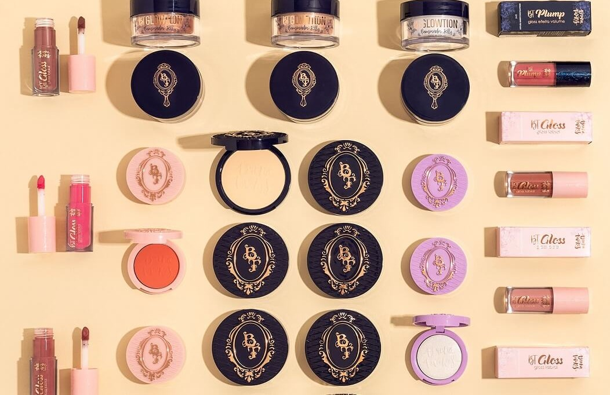
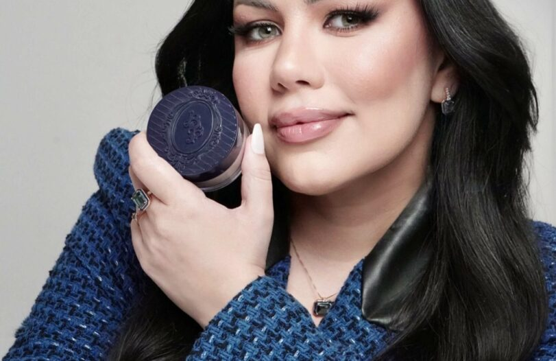
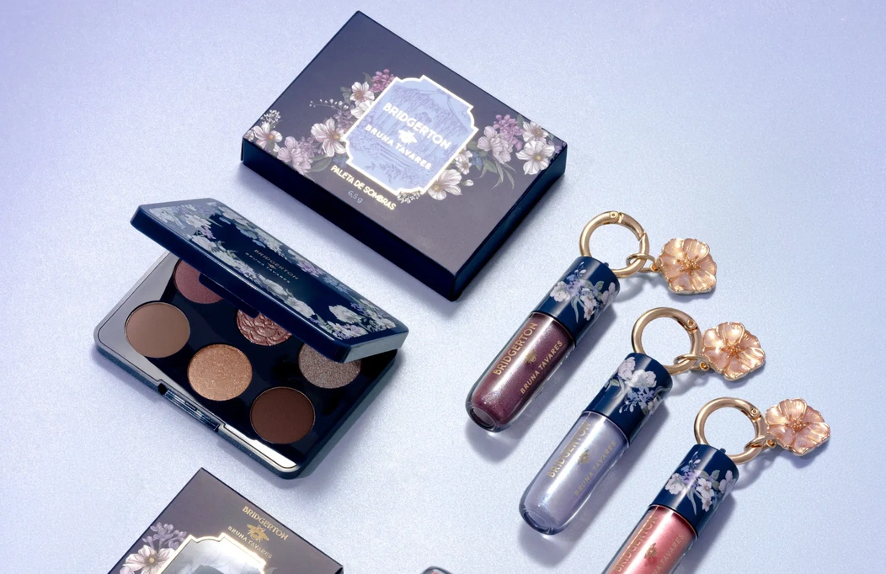
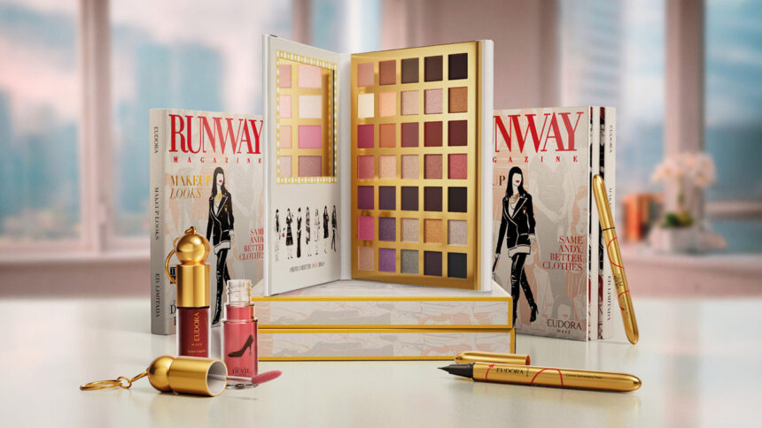
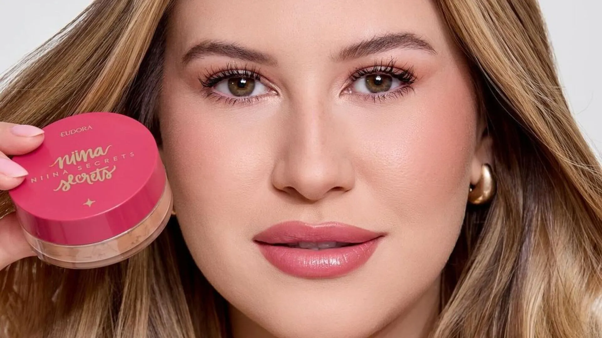
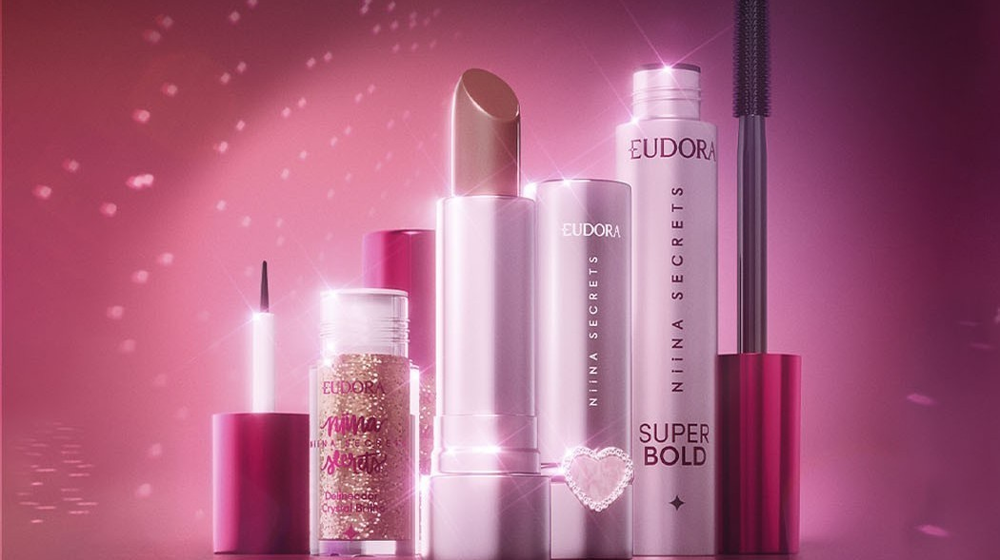
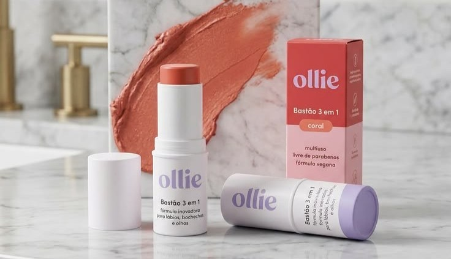
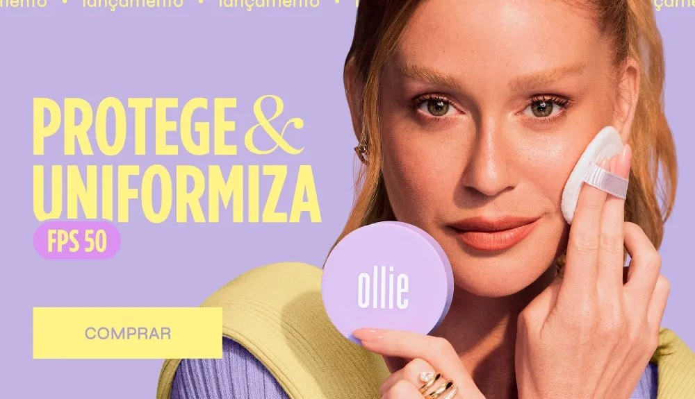
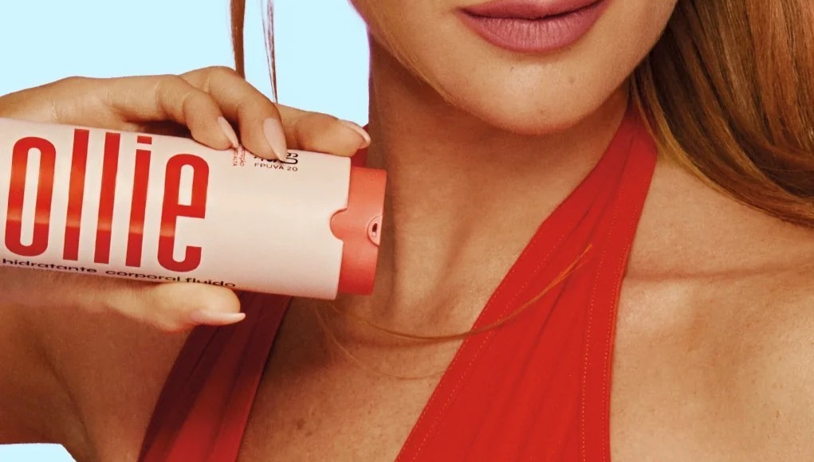

Marcas Nacionais
Agora que você ja conheceu um pouco sobre a história dos cosméticos e como ele chegou no Brasil,
vamos conhecer também as marcas nacionais mais Hypadas da atualidade!
As brasileiras mais famosas



Bruna Tavares se consolidou por meio do reconhecimento da sua fundadora,
que foi premiada como “Empreendedora de Beleza do Ano” pelo Geração Glamour
em 2022.
Produtos de destaque: Famosa por itens de alta performance, inclusão de tons (como a base BT Skin com 30 tons) e ativos de tratamento na fórmula
Best Sellers
A BT Skin é um dos projetos mais amados de BT! Trata-se de uma base com fórmula exclusiva desenvolvida no BTLAB. Ela é líquida ultra fluída e super pigmentada.
Por ter uma alta concentração de pigmentos sua textura leve consegue garantir uniformidade aliada a um efeito natural.



Best Sellers
Base Skin Control, tecnologia Skin Control traz o ativo Ácido Salicílico, que age diminuindo a produção de sebo e minimizando a aparência da acne, e Chá verde, antioxidante que previne
e reduz as linhas e rugas de expressão, sendo também um agente antipoluição.



Best Sellers
Protetor Solar em Bastão com Cor FPS 95 (FPUVA 40): O maior destaque da marca, com acabamento aveludado, cobertura média de longa duração e ativos como vitamina E e ácido hialurônico